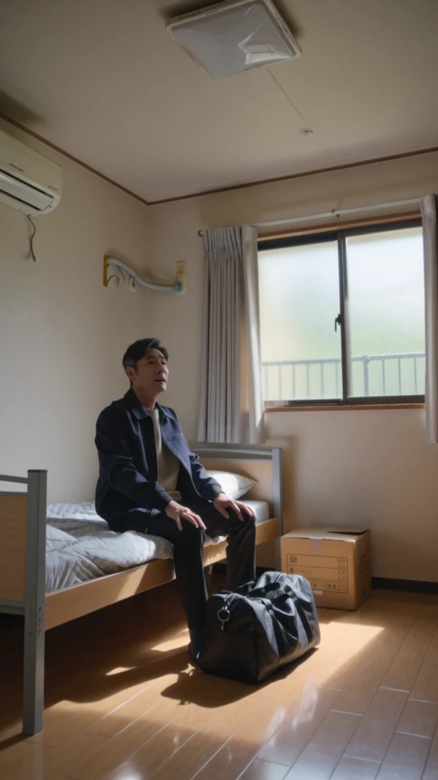

0:40소리와 함께 보기01 / 출소 후의 보금자리와 새 출발
돌아갈 곳에서,
다시 시작합니다.
집을 구하지 못한 불안에서 상담을 거쳐, 자신의 방에서 안도하기까지.
소리 없이 보기한국어 전체 이야기 읽기
교도소 문을 나섰을 때, 앞으로 어떻게 살아갈지 불안했습니다.
방을 구하려고 부동산 중개업소에 갔습니다.
하지만 제 사정을 이야기하자 입주 신청을 거절당했습니다.
더는 방을 빌릴 수 있는 곳이 없는 걸까 싶어 막막했습니다.
루미라이즈에서는 지금 제 이야기를 듣고 함께 방을 찾아주었습니다.
살 곳이 정해지고 열쇠를 받았을 때, 비로소 앞을 바라볼 수 있었습니다.
지금은 제 방에서 편안하게 지내고 있습니다.
여기서 다시 한번 시작하고 싶습니다.